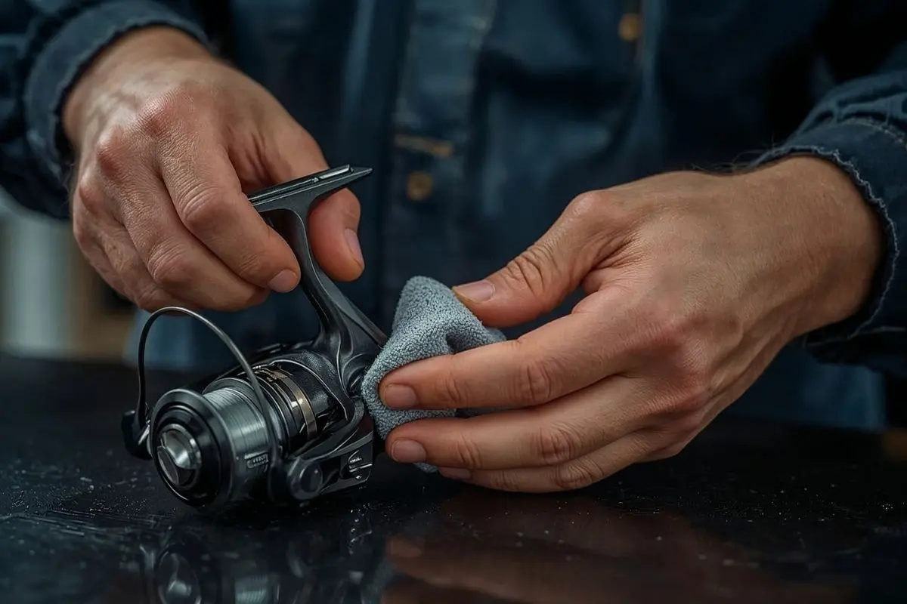
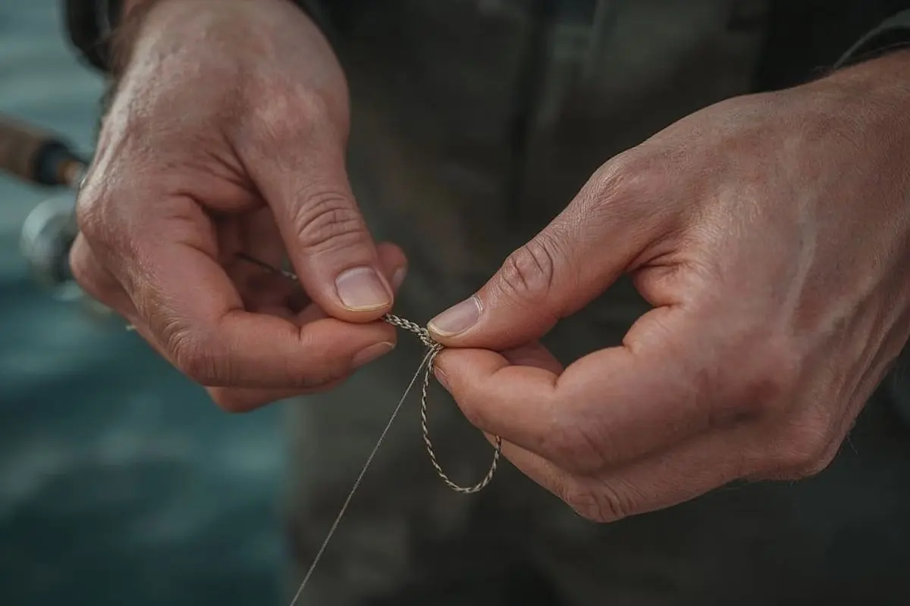
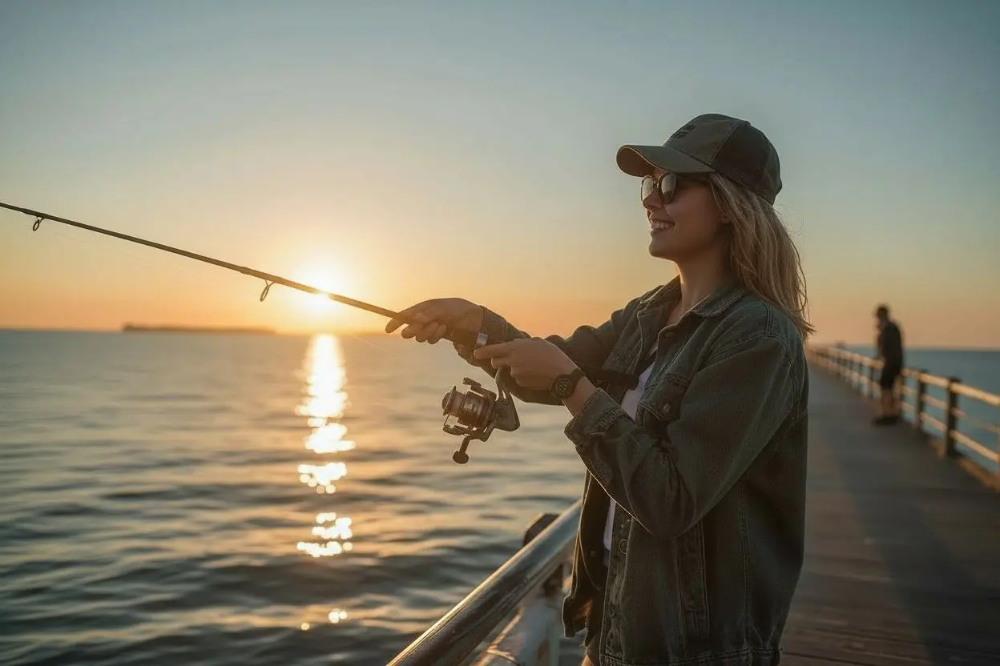

Başlangıç Rehberi
LRF'ye sıfırdan mı başlıyorsun? Doğru yerdesin. İlk atışından ilk balığına kadar her adımı birlikte atalım.
LRF Nedir ve Neden Bu Kadar Eğlenceli?
LRF (Light Rock Fishing), hafif ekipmanlarla kayalık ve taşlık kıyılarda küçük ve orta boy balıkları avlamaya dayanan bir olta balıkçılığı dalıdır. Japonya'dan dünyaya yayılan bu stil, hem yeni başlayanlar hem de deneyimli balıkçılar için son derece keyiflidir. Ekipman maliyeti düşük, öğrenme eğrisi kısa ve her yaşa uygundur.
-
Uygun Bütçe
4000-6000 TL ile eksiksiz bir başlangıç seti kurulabilir. Her bütçeye uygun çözümler mevcuttur.
-
Hızlı Öğrenme
Temel teknikleri birkaç seansta kavrayabilirsin. Pratik yaparak ve aksiyon mühendisliğini çözerek hızla gelişirsin.
-
Her Kıyıda Geçerli
Türkiye'nin tüm sahillerinde, liman içlerinde, kayalıklarda ve taşlık meralarda kolayca uygulanabilir.
-
Her Yaşa Uygun
Çocuktan yetişkine herkes keyifle yapabilir. Hafif ve narin takım yapısı sayesinde yorgunluk hissetmezsiniz.
LRF Başlangıç Adımları

Ekipmanını Hazırla
İlk adım, setini doğru bir şekilde bir araya getirmektir. Makine kamışa takılır, misina makaraya sarılır ve florokarbon şok lider bağlanır. Bu işlemleri bir kez öğrenince her seferinde 5 dakikada tamamlarsın.
- Makineyi kamışın makine yatağına (reel seat) sıkıca tak ve kilitle.
- PE örgü misinayı makaraya en az 100-150 metre sar, eşit ve sıkı olmasına dikkat et.
- Misina ucuna 1-1.5 metre florokarbon şok lider bağla (FG veya Albright düğümü).
- Şok lider ucuna mikro klips bağla, sahte değişimini kolaylaştırır.

Temel Düğümleri Öğren
Balıkçılıkta en sık yaşanan hayal kırıklığı kopan misinalardır. Doğru düğüm bilmek, hem sahteni hem de balığını kaybetmeni önler. İki temel düğüm yeterlidir.
- Improved Clinch Düğümü: Mikro klips bağlantısı için en pratik düğümdür. 5 dakikada öğrenilir.
- FG Düğümü: PE misina ile florokarbon lideri birleştirmek için en güçlü yöntem.
- Her düğümü bağladıktan sonra ıslatıp yavaşça sıkıştır, sürtünme ısısı misinayı zayıflatır.
- Düğüm bağlamayı evde pratik yap; sahilde aceleyle bağlanan düğümler kopar.

İlk Atışını Yap
Ekipman hazır, düğümler tamam; şimdi sıra sahile çıkmaya geldi. İlk seferinde sonuç beklemek yerine tekniği hissetmeye odaklan. Her atış seni bir adım daha ileriye taşır.
- Sakin ve sığ bir kıyı seç, iskele kenarı veya taşlık sahil idealdir.
- 1-3 gr jig head + 4-5 cm (1.5-2 inç) silikon yem ile başla.
- Silikon yemi dibe bırak, yavaşça sar ve dur. Stop & Go tekniği en etkili başlangıç yöntemidir.
- Misina gerginliğini hisset, vurma anında sert bir çekiş hissedeceksin.
Sık Sorulan Sorular
Yeni başlayan LRF avcılarının en kapsamlı LRF topluluğunda merak ettiği temel sorular ve kurumsal cevapları.
-
Türkiye genelinde denizlerde amatör (hobi amaçlı) olta balıkçılığı yapmak için T.C. vatandaşlarına herhangi bir resmî lisans, belge veya izin alma zorunluluğu yoktur. Gidip herhangi bir liman içinde, taşlık sahilde veya kayalık meralarda takımını kurup keyifle ve özgürce LRF avcılığı yapabilirsin. Sadece iç sular (göller ve akarsular) için dönem ve bölge yasaklarına dikkat etmen yeterlidir.
-
LRF balıkçılığında predatör balıkların kıyıya en çok yanaştığı ve mikro sahtelere atladığı en verimli zaman dilimi gün batımı (Sunset) ile gece yarısı arasındaki saatlerdir. Özellikle liman içlerindeki projektör ve sokak lambalarının su yüzeyine vurduğu ışık gölgeleri, meraların en trofe noktalarıdır. Mevsimsel olarak ise eylül, ekim ve kasım ayları kıyıların en hareketli ve balık popülasyonunun zirveye ulaştığı başlangıç dönemleridir.
-
LRF'nin en büyük lüksü, ağır ve hantal yem kovaları, devasa kurşun yığınları ve sehpalar barındırmadığı için tüy gibi hafif olmasıdır! Takımını sırt çantana atıp sahile indiğinde 1,5 - 2 saatlik at-çek seansları bile sana muazzam keyifli trofeler ve inanılmaz bir deşarj hazzı yaşatmaya fazlasıyla yeterlidir. Uzun ve yorucu bekleyişler tamamen ortadan kaldırılmıştır.
-
Sahilde bir meraya indin ve yarım saattir vuruş alamıyorsan hiç canını sıkma, LRF avcısı durağan kalmaz! Hemen aksiyon mühendisliğini ve taktiğini değiştir: Mikro jig head ağırlığını hafiflet (örneğin 2 gramdan 1,2 grama düş), soft plastik yeminin rengini ve kokulu silikon varyantını değiştir ve en önemlisi kayalıkların, iskele ayaklarının tam diplerine ve sığ gölgelere doğru yönel! LRF dinamik bir mera arama sanatıdır, balık elbet o iştah kabartan mikro aksiyona kısa sürede teslim olacaktır.
-
Kayıtsız şartsız EVET, hatta bu bizim platformumuzda en çok aşıladığımız balıkçılık kültürüdür: "Catch & Release" (Yakala ve Bırak!) LRF takımlarında kullanılan mikro iğneler balığın ağız dokusuna kaba ve derin hasarlar vermez. Yakaladığın balıkları ve limit altı yavruları narin bir balıkçı pensesiyle incitmeden iğneden söküp, suya yavaşça geri bıraktığında o balığın kuyruk sallayarak denize süzülmesi sana çok daha büyük bir ustalık hazzı verecektir!
-
Türkiye meralarında LRF disipliniyle dört mevsim av bereketi yaşanır! İlkbahar ve yaz aylarında iskele diplerinde, taş aralarında mırmırlar, iskorpitler ve sığ sularda hırçın hanoslar av verirken; sonbahar ve kışın soğuk sularında ise orta suda ve dipte av veren istavritler, dişli lüfer familyası, mırmırlar ve iri levrekler mikro sahtelere atlar! Her mevsimin trofe karakteri bambaşkadır.
Artık Tamamen Hazırsın!
Malzeme Rehberi ile kamış, makine ve sahte detaylarını incele; ardından Teknik İpuçları ile aksiyonlara geç.